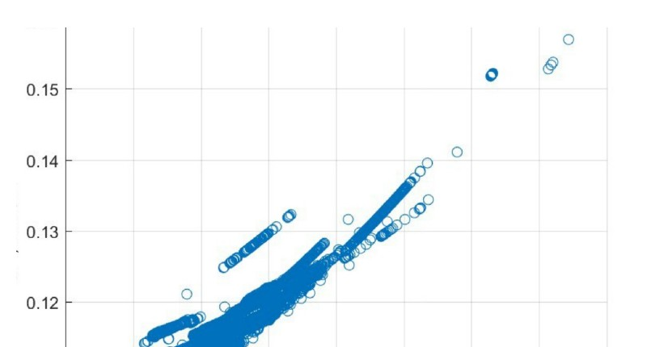
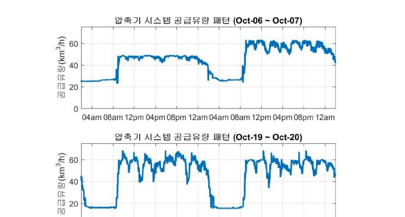

데이터로 찾는 산업·건물 에너지절감 실무 — 70쪽
생산공정별 수요패턴에 맞춰 고효율 압축기 우선순위와 압력 Set Point 를 설 정한다. 그림 14-1. 원본 보고서의 공급유량 대비 공기압축기 시스템 UPI 분포. [S05] 2018 자동차 제조 공장 공기압축기 분석자료를 비식별 형태로 복원. 그림 14-2. 원본 보고서의 압력·BOV·제어 패턴 예시. [S05] 2018 자동차 제조공장 공기압축기 분석자료를 비식별 형태로 복원.


인쇄본 기준 p. 70